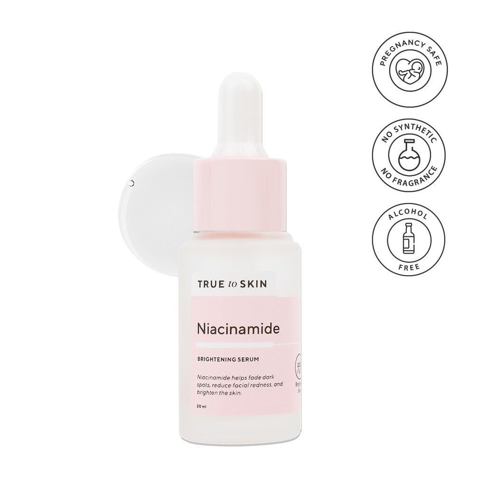
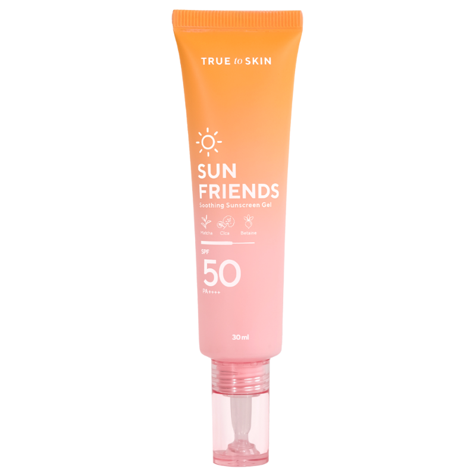
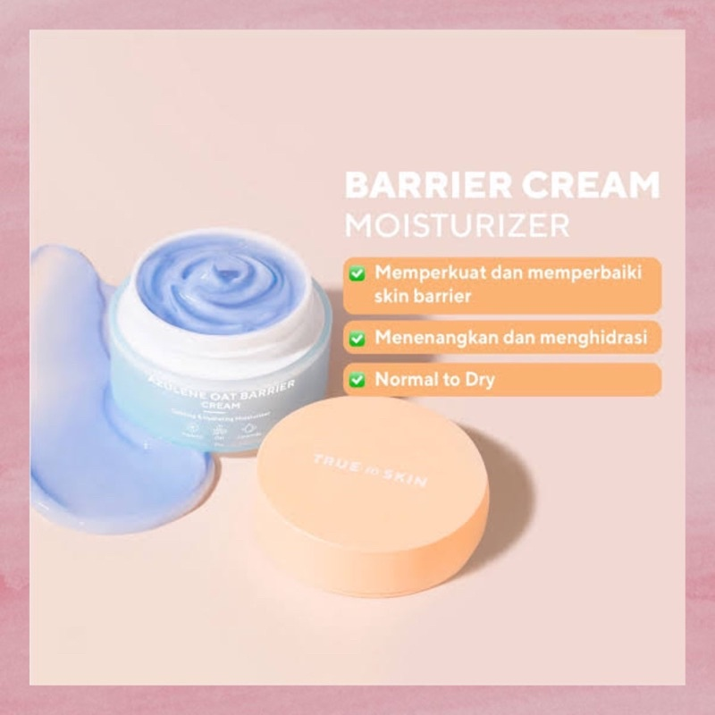
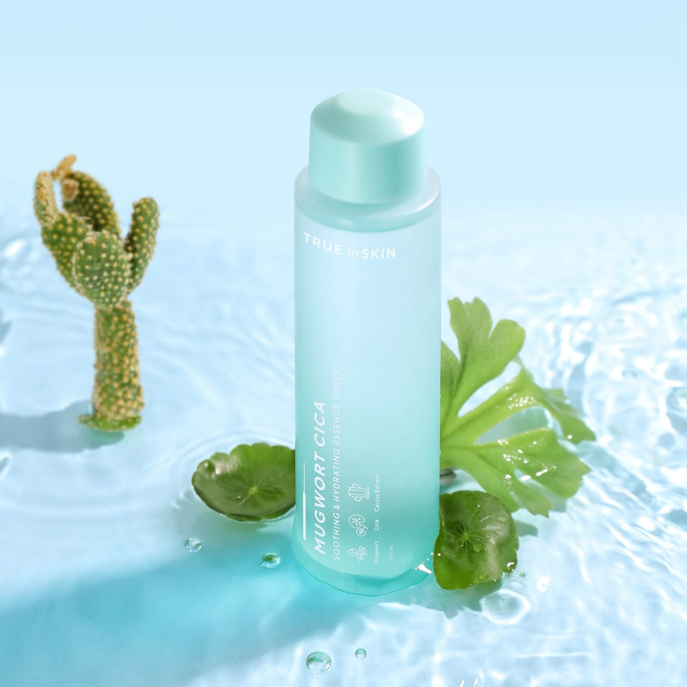

Our Products

Facial Wash
Pembersih wajah lembut yang efektif mengangkat kotoran, minyak, dan sisa makeup tanpa membuat kulit terasa kering. Cocok untuk kulit sensitif dengan formula yang ringan dan menenangkan.

Serum
Serum dengan kandungan aktif yang membantu mencerahkan kulit, menyamarkan noda hitam, dan menjaga kelembapan. Teksturnya ringan dan cepat meresap tanpa lengket.

Sunscreen
Sunscreen dengan perlindungan SPF tinggi untuk melindungi kulit dari sinar UVA dan UVB. Nyaman digunakan sehari-hari tanpa meninggalkan white cast.

Moisturizer
Pelembap yang menjaga hidrasi kulit sepanjang hari dan membantu memperbaiki skin barrier. Membuat kulit terasa lebih halus dan sehat.

Toner
Toner yang membantu menghidrasi dan menyeimbangkan pH kulit serta mempersiapkan kulit sebelum skincare berikutnya. Memberikan efek segar dan menenangkan.

Cleansing Balm
Pembersih berbentuk balm yang efektif mengangkat makeup waterproof dan kotoran hingga ke pori-pori. Berubah menjadi tekstur lembut saat digunakan tanpa membuat kulit kering.